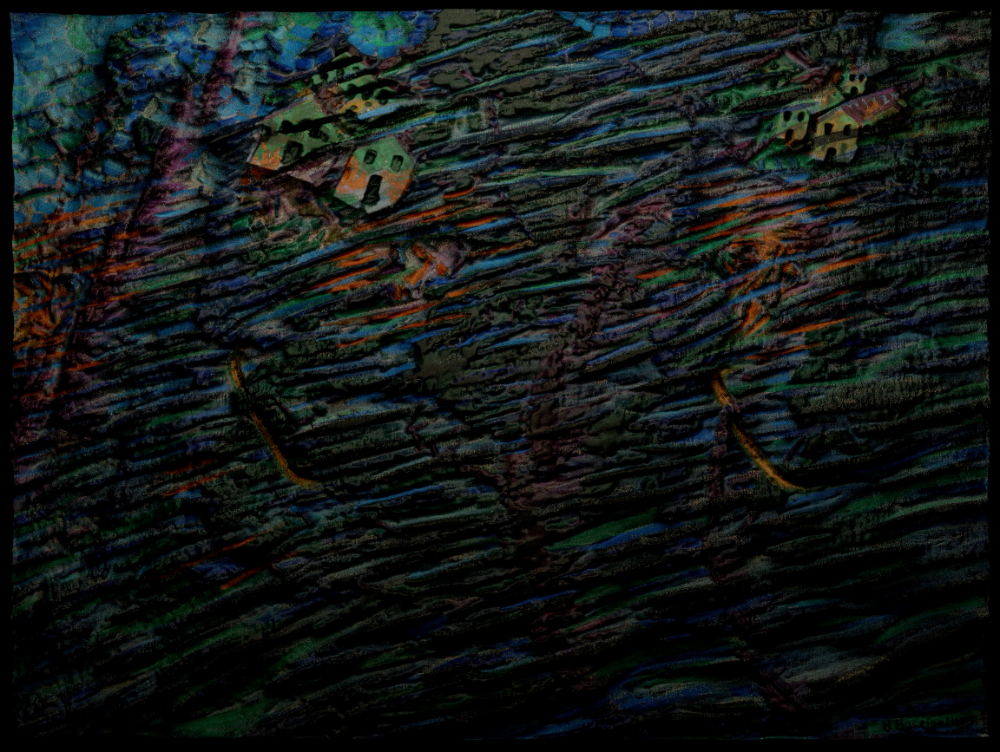

<!DOCTYPE html>
<html lang="en">

<head>
  <meta charset="utf-8" />
  <meta name="viewport" content="width=device-width, initial-scale=1.0" />

  <title>Andrea Corsini - controsenso</title>
  <link rel="icon" type="image/x-icon" href="assets/favicon.png" />

  <link rel="stylesheet" href="style2.css" />

  <script src="libraries/p5.min.js"></script>
</head>

</html>

<body>
  <!------------------------------------SCROLL------------------------------------->
  <div class="progress-container">
    <div class="progress-bar" id="myBar"></div>
  </div>

  <!------------------------------------NAVBAR------------------------------------->
  <div id="navbar">
    <a>andreacorsini.it</a>
    <a>-</a>
    <a href="" style="height: 100%;"></a>
    <a>-</a>
    <a>portfolio 2024</a>
  </div>

  <a id="works" href="index.html" style="color: white; text-decoration: none;">back</a>
  <div id="cerchiomouse1" onclick="location.href='index.html';"></div>

  <!------------------------------------HOMEPAGE------------------------------------->
  <div id="homepage">
    <a id="titoloneprj"><span
        style="position: absolute; transform: translateX(30vw); color: deeppink; overflow: hidden;"><span
          id="hometextanim1">CONTROSENSO</span></span><br>
      <span
        style="font-family: Arial, Helvetica, sans-serif; font-size: 6.3vw; position: absolute; transform: translateX(20vw); overflow: hidden;"><span
          id="hometextanim2"> AMARO
          RUMORE</span>
      </span><br>
      <span style="position: absolute; transform: translateX(27vw); overflow: hidden;"><span id="hometextanim3"> DI UN
          ADDIO</span></span></a>
  </div>

  <div id="totale">
    <div id="immagini">
      <div style="display: flex; flex-direction: column;">
        <div style="padding:56.25% 0 0 0;position:relative;"><iframe
            src="https://player.vimeo.com/video/739183719?h=c47d8f9db1&byline=0&portrait=0"
            style="position:absolute;top:0;left:0;width:100%;height:100%;" frameborder="0"
            allow="autoplay; fullscreen; picture-in-picture" allowfullscreen></iframe>
        </div>
        <script src="https://player.vimeo.com/api/player.js"></script>

        

        

        

        

        

        
      </div>
    </div>

    <div id="testi">
      <div id="testo">
        This is a project created to give people with visual and hearing
        disabilities the opportunity to enjoy works such as the triptych "Addii,
        versione I" by Umberto Boccioni, in the “Controsenso” exhibition held at
        the Institute for the Blind in Milan.<br />
        The project consists of a video whose audio is halfway between audio
        description and poetic transposition of the paintings in question, to
        describe what happens on the painting but also convey the feelings that
        the style and the brushstroke represent.<br />
        During the exhibition, it was flanked by a tactile artifact that
        markedly reproduced with chalk the direction and grain of the
        brushstrokes of the paintings examined.<br />
        My role was to transpose the paintings into 3D graphic and to transform
        the flat surface into something tangible that referred to tactile
        artefacts, as well as the ideation of the content.<br />
        <br /><br />
        <span id="collab">
          in collaboration with:<br />
          Simone Cerea<br />
          Giuseppe Defilippis<br />
          Stefano Gubiolo<br />
          Barbara Mazzina<br />
        </span>
      </div>
    </div>
  </div>

  <script src="https://cdn.jsdelivr.net/npm/gsap@3.12.5/dist/gsap.min.js"></script>
  <script src="https://unpkg.com/split-type"></script>
  <script src="animations.js"></script>
  <script src="https://cdn.jsdelivr.net/npm/locomotive-scroll@beta/bundled/locomotive-scroll.min.js"></script>
  <script>
    (function () {
      const locomotiveScroll = new LocomotiveScroll();
    })();
  </script>
</body>